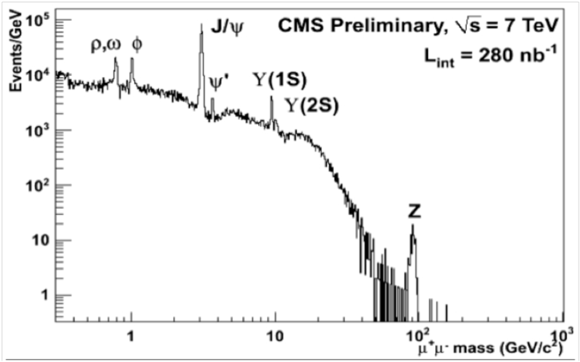
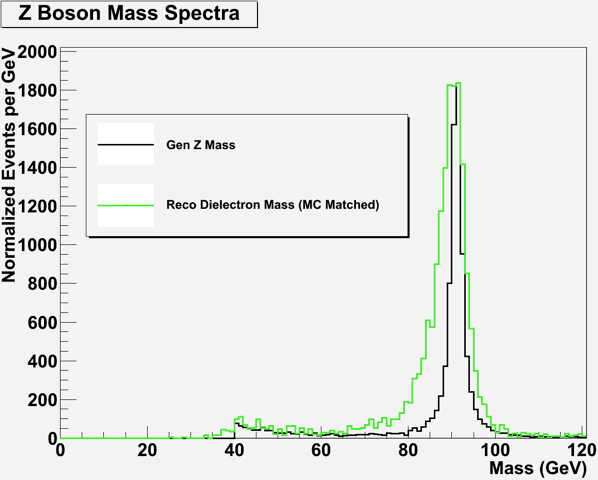

|
Let's begin with observation: look again at the dimuon mass spectrum for CMS from preliminary run data:
 Notice that the plot is a log plot, meaning that distance on each axis increases with powers of ten. So the two peaks that look equally wide—the J/Psi at roughly 3 GeV, and the Z just short of 10^2—seem the same width, but taking account of the scale of the X axis, the Z peak is perhaps 100/3 times as wide (as a first approximation.) Once we see that, we can see that since the peaks look very roughly of equal width across this plot, then in fact the peaks get wider as dimuon mass increases. Taking it as a given fact—for now—that the dimuon mass is the same as the mass of the parent particle, we can interpret this graph as indicating that the dimuon mass distribution increases in width as the parent particle increases in mass. Why should that be? One reason for the width of any peak is uncertainty in measurement: the detector only tells us to a certain degree of precision how energetic these muons are (and thus what their momentum is, and thus what their rest mass is.) Uncertainty due to measurement is complicated. In trackers measurement uncertainty goes up with energy, since rate of change of curvature is proportional to momentum, and there is less curvature—up to the limit of a straight line corresponding to infinite momentum—for a charged particle in a magnetic field. (In calorimeters, uncertainty in measurement goes down with energy. Less energetic particles produce fewer showering particles, and percent error is the square root of the number of particles divided by the full number of particles, a quantity that decreases as the number of particles increases. ) In the case of dimuon measurement, uncertainty generally increases with mass, since muon measurement depends so heavily on tracking and thus on momentum. So one reason that dimuon mass peaks are wider for heavier particles is that the uncertainty of the energy calculation for the dimuons goes up as a function of energy. A CMS graduate student was kind enough to estimate the portion of peak width for the Z which is due to measurement uncertainty: here's the plot that he produced:  (This plot was actually produced from dielectron mass, but we'll swap it for one with dimuon mass shortly.) Outlined in green is the peak as the simulation routine expects it to look in the detector; below it in black is the peak showing the detector effects due to uncertainty in measurement removed. So even after accounting for detector effects, there is still a lot of peak width to explain. A second, more fundamental source of uncertainty is intrinsic to the particles themselves, not our measurement of them. Some Zs (to take an example) are more energetic, others less, and the average is what we call the Z mass; it is as if each Z doesn't know precisely how energetic it will be until it decays.. Want to learn more? |
|
Displaying Multiple events - Close Window |